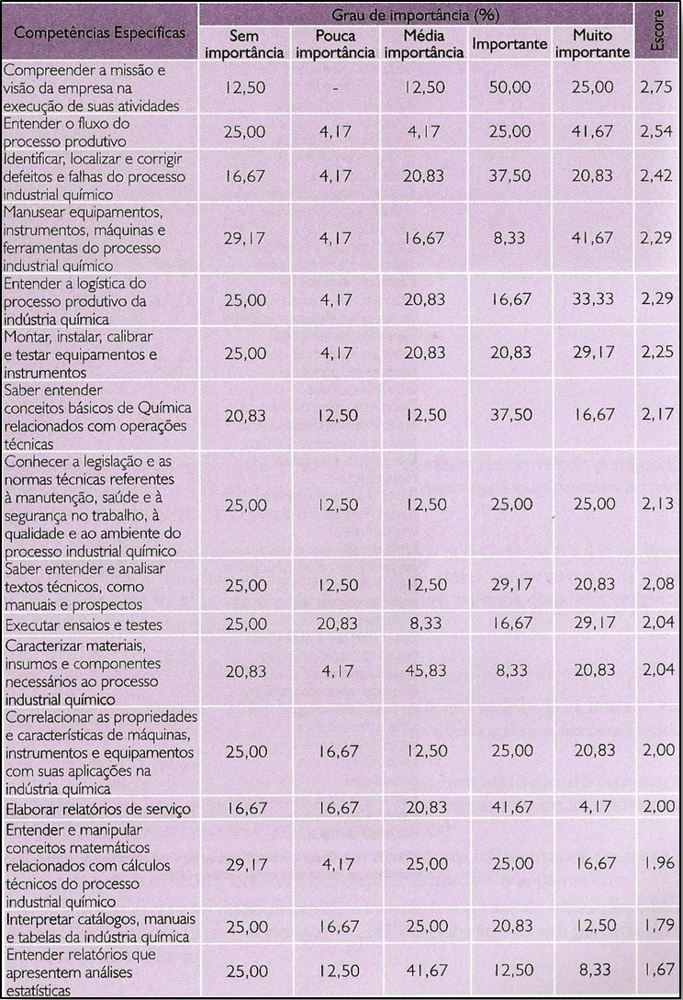

CAPÍTULO 5: O PENSAMENTO CRÍTICO E A INDÚSTRIA QUÍMICA
Pensando ativamente
ANALISANDO UM OBJETIVO QUE VOCÊ ALCANÇOU
1. Descreve um objetivo importante que você recentemente tenha alcançado.
2. Identifque os passos que você precisou tomar para alcançar seu objetivo na ordem na qual eles foram tomados e estime o tempo que cada passo levou.
3. Descreve como você se sentiu quando alcançou esse objetivo.
ALCANÇANDO OBJETIVOS DE CURTO-PRAZO.
Examinando as repostas que você acabou de dar, você pode perceber que pensar tem um papel crucial para ajudar a alcançar nossos objetivos porque nos habilita a fazer duas atividades correlacionadas:
1. Identificar os objetivos apropriados.
2.Traçar planos e estratégias que nos permitam alcançar esses objetivos.
Agora identifique cinco objetivos de curto-prazo que você gostaria de alcançar na próxima semana. Faça uma lista com esses objetivos numa ordem de importância, começando pelos objetivos que trariam maior impacto para sua vida e terminando por aqueles que são menos significativos.
A seguir, escreva, numa lista numerada, o que você precisa fazer para alcançar cada um desses objetivos e coloque, ao lado de cada passo, o tempo que vai levar realiza-lo.
Avalie quais são as etapas mais importantes para alcançar seu objetivo. Quais são os maiores obstáculos que você vai enfrentar? O que você pode fazer para enfrentar esses obstáculos?
Pense criticamente sobre esses objetivos: valem realmente a pena? Como você vai se sentir quando alcança-los?
ANALISANDO UM OBJETIVO DE LONGO PRAZO
1. Descreva, sendo o mais específico que conseguir, os objetivos de longo-prazo mais importantes para você em sua vida. Eles podem ser profissionais ou pessoais.
2. Explique as razões que levaram você a selecionar esses objetivos e porque você acredita que eles fazem sentido ou são merecedores de sua dedicação.
3. A seguir, escreva, numa lista numerada, o que você precisa fazer para alcançar cada um desses objetivos e coloque, ao lado de cada passo, o tempo que vai levar realiza-lo
4. Identifique os sacrifícios ou esforços que você precisará fazer no presente para alcançar esses objetivos no futuro.
Esses objetivos de curto e longo-prazos estão bem definidos? Eles estão claros para você? Os obstáculos, esforços e sacrifícios que precisam ser feitos estão claros para você? Como esses objetivos se relacionam com sua concepção de felicidade?
Bem-vindo ao pensamento crítico!
Contextualizando
O massacre da Praça Celestial, 1989
Foi a maior manifestação popular contra o Partido Comunista Chinês (PCC). Os protestos rolaram entre 15 de abril e 5 de junho de 1989, finalizados com o massacre da Praça da Paz Celestial, no centro político de Pequim. Com a queda da União Soviética, a China (assim como outros países socialistas) rendeu-se ao capitalismo. A abertura econômica, entretanto, não foi acompanhada de reformas políticas, deixando a população insatisfeita com a repressão aos direitos individuais, à liberdade de imprensa e de expressão, e com as péssimas condições sociais. Após os protestos, o país abrandou a linha-dura, apesar de o PCC seguir controlando a mídia e a influência cultural externa. Após o massacre, nenhum movimento enfrentou o partido de novo.
No dia 3 de junho de 1989, o exército chinês massacrou os jovens que estavam na praça. O número exato não é conhecido até hoje. 3 mil mortos, segundo as estimativas pessimistas. Mas no dia 5 de junho, aconteceu algo que entraria para a história. A foto acima é considerada uma das mais icônicas do século XX. Um homem parando uma fila de tanques? Esse homem, desconhecido até os dias de hoje, evitou que os tanques chegassem até os estudantes. Acima de tudo é o símbolo de alguém com pensamento crítico e coragem para levar, pacificamente, suas ideais até o ponto de colocar em risco sua própria vida. Assista o vídeo abaixo com a façanha do chamado “Herói da Praça Tianamen’ ou o “Homem dos Tanques.”
(Re)construindo conhecimentos
Pensamento crítico
Pensar criticamente sobre um argumento ou uma mensagens cotidiana – seja em palavras ou em imagens – nos dá poder sobre a nossa próprio pensamento. Pensar criticamente sobre a maneira como expressamos nossas opiniões – escritas ou o – nos dá poder para convencer ou persuadir. Mas o que é pensar criticamente?
Em primeiro lugar, vamos reparar na expressão “pensar”. Escutamos os professores de filosofia dizendo que “a filosofia ensina a pensar”. Também já ouvimos as professoras de matemática repetindo, na hora de resolvermos um problema de geometria analítica, “vocês precisam pensar por si próprios”. A maioria dos alunos, nessas situações, fica imaginando que deveria estar envolvido como uma atividade especial e profunda chamada “pensamento”. Algo que alguns conseguem outros não, mas que ninguém nos ensina propriamente falando. A boa notícia é que o pensamento não é uma atividade apenas de sábios. Todos pensamos!
Uma consulta num bom dicionário vai apresentar as seguintes atitudes como significado para “pensar”: apreciar que, acreditar que, cogitar que, desejar que, imaginar que, considerar que, refletir que ou sobre, ponderar que, supor que, especular que, ficar ruminando algo, entender que, compreender que, raciocinar que, fantasiar com, escolher, deliberar que, debater, fantasiar, contemplar, especular que, entre outras. Todas essas ações, atitudes, são intencionais – no sentido que são direcionadas para algo, um determinado conteúdo. Desejo que “amanhã faça sol”. Esse é o meu pensamento agora e o conteúdo dele é que “amanhã seja um dia ensolarado”.
O que isso quer dizer? Que todos pensamos o tempo todo...Platão dizia que “o pensamento é a conversa consigo mesmo”. Os filósofos pensam igual a todo o mundo. A diferença é que se permitem fazer perguntas – como as crianças? – sobre questões do tipo: O que é real? O que é o tempo? O que é a felicidade? O que é o amor? O que é a verdade? O que é a justiça? Por que há desigualdade no mundo, precisa ser assim? ´Devemos comer carne? Como devo conduzir minha vida? Devo adorar algum deus? O que é a beleza?
Em segundo lugar, vamos reparar na segunda parte da expressão “pensamento crítico”. O que é ser crítico? Para o senso comum, o termo “crítico tem conotações negativas ou destrutivas. Ser “crítico” pode significar criticar os outros, ser sempre negativo. Entretanto, ser crítico para a filosofia não significa questionar tudo aleatoriamente. A filosofia busca com seu trabalho aproximar-se o mais que pudermos à verdade. O pensamento crítico é uma competência ou um conjunto delas muito importante para qualquer campo profissional. E seja qual for esse campo, consiste em fazer e responder questões de uma maneira sistemática.
A seguir apresentamos um conjunto de competências básicas e específicas necessárias para o trabalho de colaboradores ligados à área de produção das empresas do setor químico, muitas delas estão diretamente relacionadas com o pensamento crítico.

Então, pensar criticamente significa questionar, em vez de aceitar tudo o que lemos ou escutamos ou fazemos...buscamos evidências e boas razões, antes de aceitar algo como verdadeiro. Ponderamos se o que fazemos não poderia ser diferente, de outro jeito, melhor, feito por outros meios, mais justo, mais equitativo, antes de fazer - sem pensar, sem questionar - aquilo que estamos acostumados ou nos mandam fazer. É isso que os cientistas, filósofos e pensadores fazem! Não há segredo nenhum em suas capacidades. Eles apenas se dedicam a isso e estudam muito sobre o tema no qual estão interessados. Mas se você não pretende ser um cientista, mas um bom cidadão e um bom profissional, precisa desenvolver as mesmas capacidades.
Pensamento crítico – uma definição formal
“ É o processo intelectualmente disciplinado de ativa e competentemente conceitualizar, aplicar, analisar, sintetizar ou avaliar as informações colhidas - de uma leitura, de um relatório, de uma pesquisa, em uma aula ou palestra, como um guia de uma experiência ou experimento, da reflexão, mediante raciocínio -, para poder toma-las como um guia seja para formar uma opinião, seja para adotar um curso de ação.”
Fonte: Critical Thinking as Defined by the National Council for Excellence in Critical Thinking, 1987
Então como exercitar o pensamento crítico?
As palavras comuns que utilizamos para fazer perguntas: “o que”, “como”, “onde”, “quem” e “por que’, irão ajudar você a começar a exercitar o pensamento crítico; junto com as frases: “o que se segue disto”, “o que acontecerá se”, “o que isto implica”, e assim por diante. Tentar responder estas perguntas de maneira sistemática irão capacitar você a preencher três funções vitais para qualquer estudo sério e para pensar por si mesmo: descrição, análise e avaliação. Essas são as coisas que você precisa fazer:
Descrever: definir claramente sobre o que você está tentando falar, dizer exatamente o que está em jogo, onde isso acontece, quando, ou sob que circunstâncias. Fazer isso ajudará você a introduzir um tema. Descrições mais complexas de algo já são uma análise.
Analisar: examinar e explicar as partes de um todo; dar razões; comparar e contrastar diferentes elementos; mostrar seu entendimento sobre as relações entre esses elementos. A análise forma a parte principal de um estudo crítico.
Avaliar: julgar o sucesso ou fracasso de algo, suas implicações e valores. Avaliar nos leva a tirar conclusões ou fazer recomendações. As avaliações geralmente estão ao final do processo crítico: ao final de um texto ou de um relatório, por exemplo.
Resumindo o que vimos até agora podemos afirmar que o pensamento é um processo extraordinário, mas nada mágico, que nós usamos a todo momento para dar sentido ao mundo e às nossas vidas. O pensamento crítico nos capacita para que resolvamos os problemas com os quais nos confrontamos continuamente, para tomar decisões inteligentes e para alcançar os objetivos que são importantes para nós.
A seguir estude o mapa abaixo criado como um guia para o raciocínio crítico, antes de você adotar uma posição, questione quais são as bases para você sustentar sua opinião; use suas capacidades argumentativas e avalie quais os resultados de sua conclusão. Não deixe de considerar alternativas e oposições.
1. Forme um ponto de vista
a) Descrição inicial
b) Definições claras
c) Exemplos
Flecha para a esquerda: olhe para um lado
2. Outro ponto de vista
a) Razões / evidências / argumentos (fortes? relevantes? Válidos?)
Flecha : Procure por
b) Origem: como eu formo este ponto de vista?
Flecha para a direita: olha para o outro lado
a) Razões / evidências / argumentos (fortes? relevantes? Válidos?)
Flecha : Procure por
b) Origem: como eu formo este ponto de vista?
3. Construa o suporte - Razões / evidências / argumentos (fortes? relevantes? Válidos?)
Flecha: inferência
4. Conclusão, decisão, solução
Flecha: predição
5. Consequências: o que vai acontecer se a conclusão for adotada
Ação e reflexão
Caro aluno, vamos testar suas capacidades de pensamento crítico aplicadas à elaboração de uma redação. A proposta abaixo foi aplicada em 2009.
Proposta Redação ENEM 2009
Com base na leitura dos seguintes textos motivadores e nos conhecimentos construídos ao longo de sua formação, redija texto dissertativo-argumentativo em norma culta escrita da língua portuguesa sobre o tema O indivíduo frente à etica nacional, apresentando proposta de ação social, que respeite os direitos humanos. Selecione, organize e relacione coerentemente argumentos e fatos para defesa do seu ponto de vista.
Andamos demais acomodados, todo mundo reclamando em voz baixa como se fosse errado indignar-se.
Sem ufanismo, porque dele estou cansada, sem dizer que este é um país rico, de gente boa e cordata, com natureza (a que sobrou) belíssima e generosa, sem fantasiar nem botar óculos cor-de-rosa, que o momento não permite, eu me pergunto o que anda acontecendo com a gente.
Tenho medo disso que nos tornamos ou em que estamos nos transformando, achando bonita a ignorância eloquente, engraçado o cinismo bem-vestido, interessante o banditismo arrojado, normal o abismo em cuja beira nos equilibramos – não malabaristas, mais palhaços.
LUFT, L. Ponto de vista. Veja. Ed. 1988, 27 dez 2006 (adaptado)
Qual é o efeito em nós do “eles são todos corruptos”?
As denúncias que assolam nosso cotidiano podem dar lugar a uma vontade de transformar o mundo só se nossa indignação não afetar o mundo inteiro. “Eles são TODOS corruptos” é um pensamento que serve apenas para “confirmar” a “integridade” de quem se indigna.
O lugar-comum sobre a corrupção generalizada não é uma armadilha para os corruptos: eles continuam iguais e livres, enquanto, fechados em casa, festejamos nossa esplendorosa retidão.
O dito lugar-comum é uma armadilha que amarra e imobiliza os mesmos que denunciam a imperfeição do mundo inteiro.
CALLIGARIS, C. A armadilha da corrupção.
Instruções:
- Desenvolva seu texto em prosa: não redija narração, nem poema.
- O texto com até 7 (sete) linhas escritas será considerado texto em branco.
- O texto deve ter, no máximo, 30 linhas.
O que aprendi
Este capítulo explora algumas das habilidades e atitudes que caracterizam os pensadores críticos:
• Pensar ativamente
• Explorar cuidadosamente as situações fazendo perguntas
• Olhando as situações a partir de diferentes perspectivas
• Apoiando as diversas perspectivas sobre um tema com razões e evidências
• Analisar as ideias de uma maneira organizada